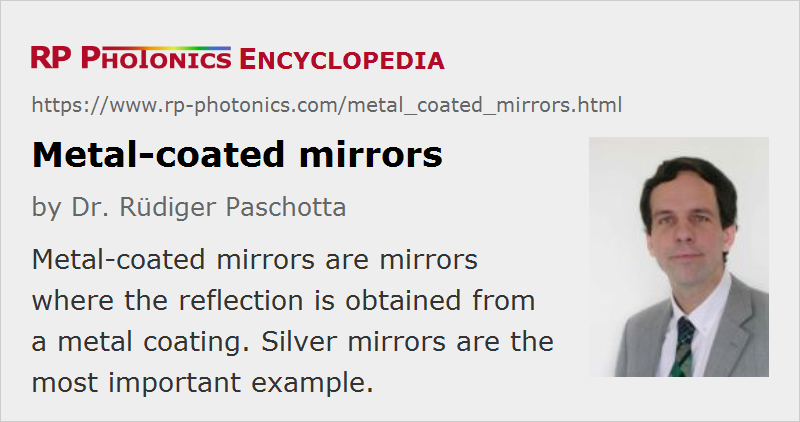

Metal-coated Mirrors
Definition: mirrors where the reflection is obtained from a metal coating
More general term: mirrors
German: metallbeschichtete Spiegel
Categories: general optics, photonic devices
How to cite the article; suggest additional literature
Author: Dr. Rüdiger Paschotta
Metal-coated mirrors are mirrors (optical reflectors) based on a thin metal coating, produced e.g. with an vacuum evaporation or sputtering technique. The metallic coating is placed on a substrate, which is often consisting of a glass (e.g. fused silica), and sometimes a metal such as copper.
Common metal mirror coatings consist of thin films of aluminum, silver or gold; less common are beryllium, copper, chrome and various nickel/chrome alloys. The metallic coating is often protected (enhanced) with an additional dielectric layer.
The central features of metallic mirrors are very broadband reflections, although with a limited reflectivity, and low chromatic dispersion. Further, the angular dependence of the reflectivity is relatively weak.
First Surface versus Second Surface Metallic Mirrors
For a first surface mirror, the reflective coating is on the side of the incident light. The light only slightly penetrates the coating, but does not reach the substrate.

Second surface mirrors have the reflecting coating on the other side of the substrate, so that the coating can be better protected. The light propagates through the substrate before and after the reflection. This type of mirror is also common for household applications. In technical applications, problems can arise from the Fresnel reflection at the first surface (which can lead to ghost images, for example, and to some power losses), and in some applications from the chromatic dispersion of the glass.
The article on first surface mirrors contains more details.
Protected Mirrors
Often, the metal layer of a first surface mirror is covered with a thin layer or multiple layers of a dielectric material such as amorphous SiO2 (silica) or Si3N4 (silicon nitride), which protects the coating against oxidation (tarnish) and scratches. Such enhanced or protected mirror coatings are definitely more abrasion-resistant than uncoated ones, but still they tend to be more sensitive than dielectric mirrors. This implies that greater care is generally required for the cleaning of metal-coated optics; they may even have to be replaced when e.g. fingerprints have been made. Also, metallic mirrors are more or less sensitive to humidity and corrosive gases.
Multilayer protection coatings can also be used to enhance the reflectivity (see below); this leads to enhanced metal coatings e.g. for enhanced silver mirrors, also called protected silver mirrors. The resulting metal / dielectric coating effectively combines the large bandwidth of a metallic mirror with the higher reflectivity and damage threshold of a dielectric mirror. Note, however, that the chromatic dispersion can be substantially modified by such a multilayer coating.
Speculum Mirrors
Early mirrors where made from massive pieces of speculum metal, an alloy of two thirds copper and one third tin, which can be polished to obtain a smooth surface with high reflectivity. Such metal mirrors were used in telescopes, for example, They suffered from relatively rapid tarnishing, which made frequent re-polishing necessary. In the 19th century, such mirrors were largely replaced with silvered glass mirrors. These do not only exhibit less tarnishing, but also the glass provides are more rigid substrate, which is nevertheless less heavy. Since then, it became common to use only thin metallic coatings on substrates.
Broad Bandwidth, Low Chromatic Dispersion
A big advantage of metal-coated mirrors over dielectric mirrors is that the reflectivity is quite uniform over a wide spectral range and also quite insensitive to the angle of incidence and polarization. Also, metal-coated mirrors can be fabricated easily and are thus relatively cheap. Therefore, they are often used as general-purpose mirrors. Also, they are sometimes required for ultrashort pulses with ultrabroad bandwidth, where it is difficult to obtain sufficient reflection bandwidth from dielectric mirrors (although chirped dielectric mirrors nowadays also offer very large bandwidths). In that context, it also relevant that metal-coated mirrors exhibit very weak chromatic dispersion; the reflection phase-shift exhibits a very small wavelength dependence. This is useful, for example, for use as reference mirrors in white-light interferometers.
Metal-coated mirrors can also work for extremely long infrared wavelengths, e.g. up to 20 μm (→ infrared optics). In that region, it is difficult to work with dielectric mirrors, as dielectrics then exhibit strong absorption.
Limited Reflectivity
A disadvantage of metallic mirrors, when compared with dielectric mirrors, are the significant reflection losses. This limitation is of fundamental nature, as metals inevitably absorb some of the incident light (even if they are very pure). As a consequence, the reflectivity is limited, e.g. to roughly 98% for protected silver mirrors. Another consequence is the relatively low optical damage threshold: the absorbed light leads to heating, and as the heat is deposited in a quite thin layer, this can easily lead to damage. Both in terms of average power and peak power, the damage threshold is low. For high average powers, substantial thermal lensing and thermal beam distortions can arise from heating effects even well below the damage threshold.
The reflection losses may be reduced with dielectric multilayer coatings. Such enhanced coatings also lead to a correspondingly higher optical damage threshold. For example, the damage threshold of an enhanced coating silver mirror for nanosecond pulses from a 1064-nm YAG laser can be several J/cm2, whereas it may be only 0.5 J/cm2 for a simple protected silver mirror (and even much less for aluminum). For comparison, dielectric mirrors can stand several tens of J/cm2.
Partially Transmissive Mirrors
It is possible to obtain partial transparency of a metal coating by making it very thin. Such mirrors can also be used as beam splitters. However, the power losses are substantial, so that the sum of transmittance and reflectance is well below 1. It is more common to use dielectric mirrors for such applications, but partially transmissive metal-coated mirrors are used if a very high operation bandwidth is required and high power losses can be tolerated.
Common Mirror Materials
Protected aluminum mirrors, e.g. with a SiO2 coating, are used for many broadband applications in the visible and ultraviolet spectral region, reaching reflectivities well above 90% in the visible but often below 90% in the UV (similar to bare aluminum). Compared with silver mirrors, such enhanced aluminum mirrors have a lower tendency for tarnishing when exposed to humidity.
Protected silver coatings (again usually with a SiO2 coating) are similarly suitable for wavelengths from about 500 nm to 20 μm. Due to their lower reflection losses, they also exhibit substantially higher damage thresholds than aluminum mirrors. Therefore, they are often preferred for applications involving lasers.
Gold mirrors are similar, but can be used only for about 600 nm and longer wavelengths. Here, reflectivities well over 95% (sometimes around 99%) are achieved. It is possible, for example, to obtain an average reflectivity of 97% between 700 and 2000 nm with a protected gold mirror. Sometimes, an unprotected gold mirror is preferred in order to avoid any dispersion from a protective coating; this is possible as gold does not tend to get oxidized.
Gold-coated copper mirrors (often fabricated with electrochemical techniques) can be used with high-power infrared lasers, such as CO2 lasers. Here, a thin reflecting gold coating is placed on a massive copper substrate. Substantial amounts of heat can be tolerated due to the high thermal conductivities of gold and copper.
Suppliers
The RP Photonics Buyer's Guide contains 63 suppliers for metal-coated mirrors. Among them:
Questions and Comments from Users
Here you can submit questions and comments. As far as they get accepted by the author, they will appear above this paragraph together with the author’s answer. The author will decide on acceptance based on certain criteria. Essentially, the issue must be of sufficiently broad interest.
Please do not enter personal data here; we would otherwise delete it soon. (See also our privacy declaration.) If you wish to receive personal feedback or consultancy from the author, please contact him e.g. via e-mail.
By submitting the information, you give your consent to the potential publication of your inputs on our website according to our rules. (If you later retract your consent, we will delete those inputs.) As your inputs are first reviewed by the author, they may be published with some delay.
See also: first surface mirrors, mirror substrates, laser mirrors, dielectric mirrors, chromatic dispersion, infrared light, infrared optics, neutral density filters
and other articles in the categories general optics, photonic devices
|  |
If you like this page, please share the link with your friends and colleagues, e.g. via social media:
These sharing buttons are implemented in a privacy-friendly way!